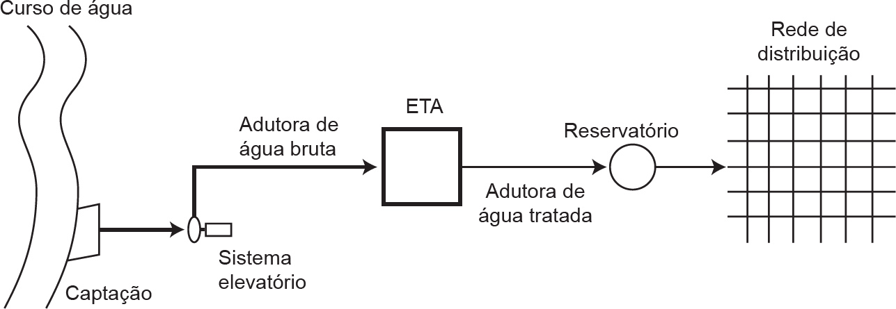

Um sistema de abastecimento de água é formado por diversas partes constituintes, tais como: tomada de
água bruta, estação elevatória de água bruta, estação de tratamento de água, estação elevatória de água
tratada, um ou mais reservatórios e rede de distribuição de água, conforme ilustrado abaixo. De acordo
com a Norma ABNT NBR 12211 (2012), existem distintas alternativas de concepção para o sistema de
abastecimento, cuja melhor escolha considera aspectos técnicos, econômicos, financeiros e sociais.

Em relação às particularidades dos diferentes constituintes de sistema de abastecimento de água, avalie as
afirmações a seguir.
-
A captação da água bruta através de torre de tomada é indicada em reservatório de acumulação
com limitações na qualidade da água reservada, em função da estratificação térmica ao longo da
profundidade líquida.
-
No dimensionamento do sistema elevatório, leva-se em consideração o desnível entre os reservatórios
inferior e superior e a perda de carga distribuída no recalque; para o desnível fixo entre os reservatórios,
considera-se escoamento não permanente.
-
No dimensionamento de uma adutora por gravidade, o desnível entre os reservatórios superior e
inferior representa a perda de carga total ao longo da adutora.
-
Na análise da sobrepressão máxima em adutora de água bruta, em função da interrupção no
fornecimento de energia elétrica, considera-se o escoamento permanente e uniforme.
-
Para atender à pressão estática máxima de 500 kPa e à pressão dinâmica mínima de 100 kPa nas
tubulações distribuidoras, a rede de distribuição deve ser subdividida em zonas de pressão.
É correto apenas o que se afirma em
-
I, II e IV.
-
I, III e V.
-
I, IV e V.
-
II, III e IV.
-
II, III e V.